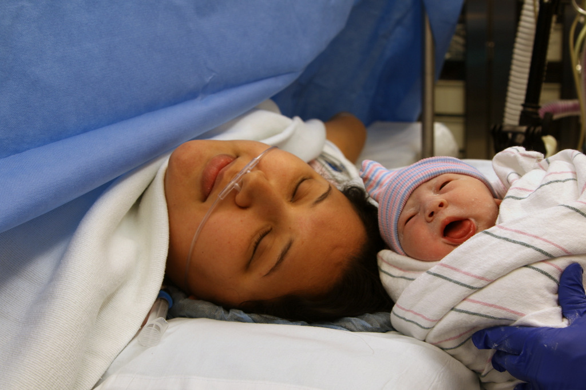
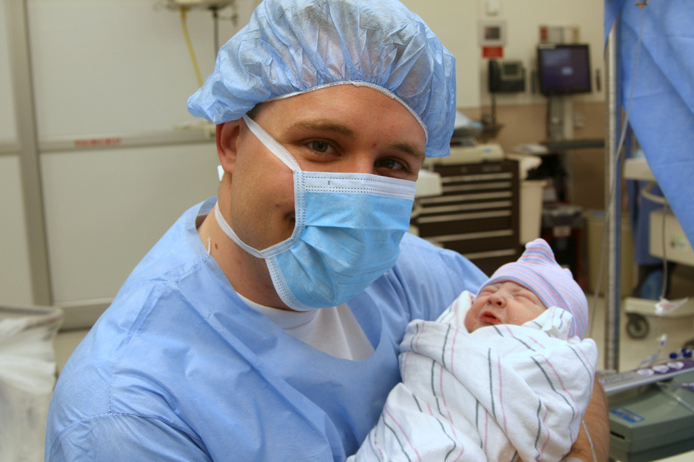
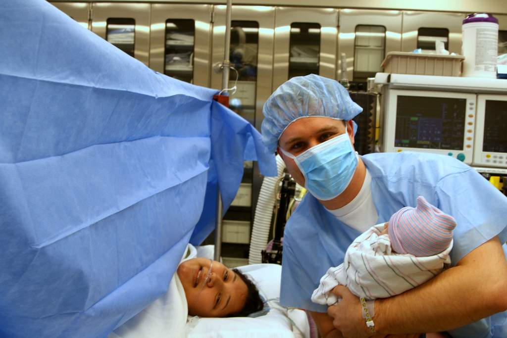
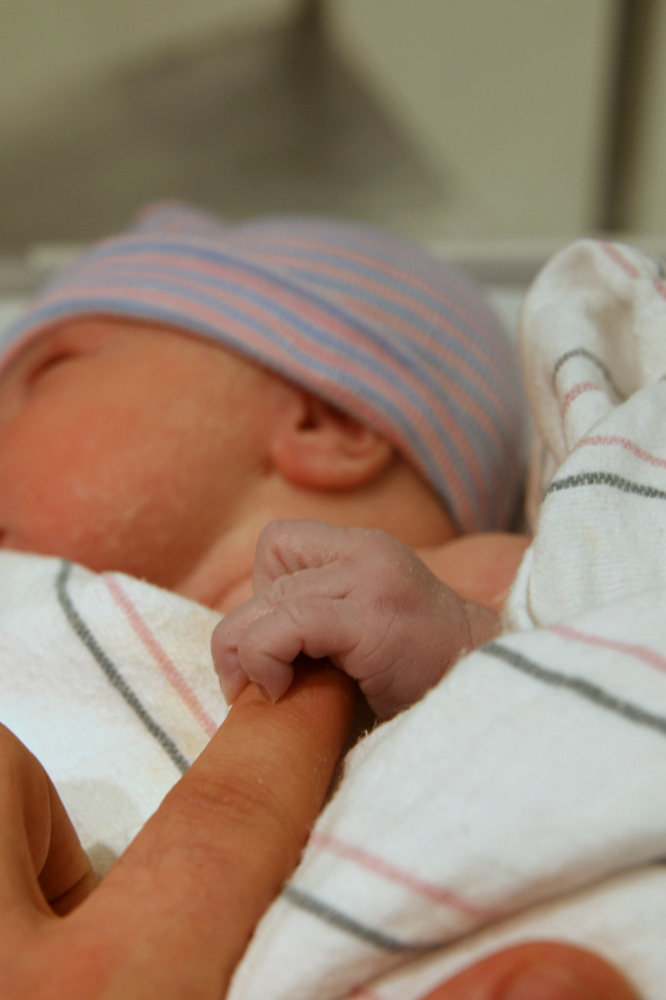
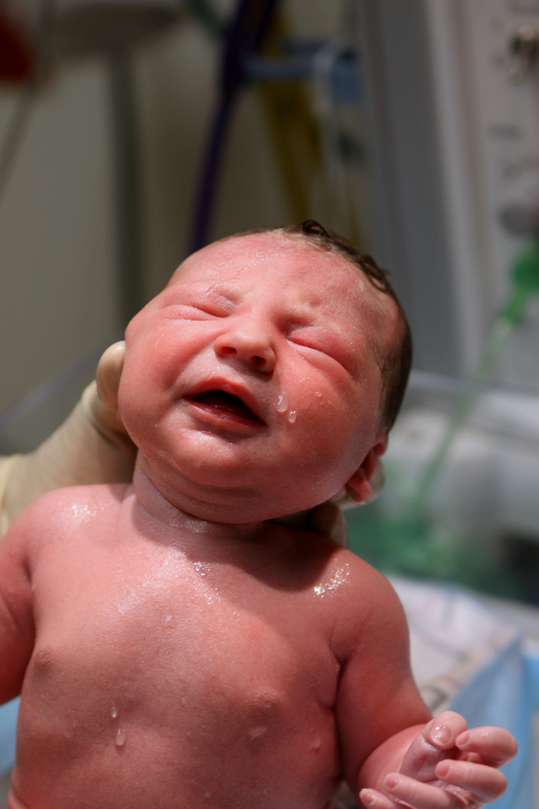
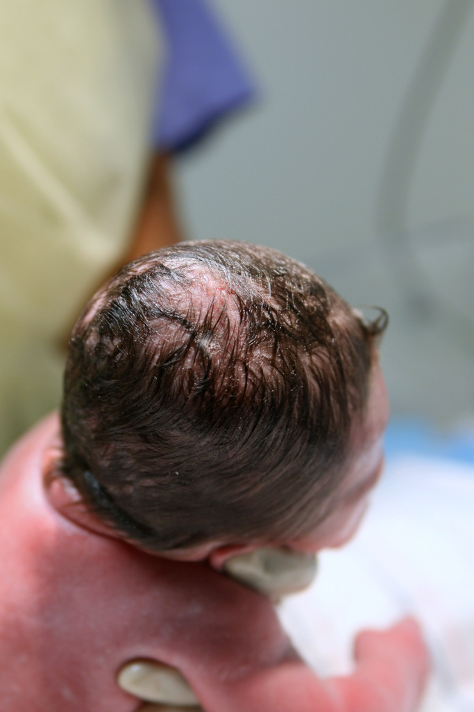

Zadie Alyssa Heimlich
Born
Sunday December 28, 2014 at 7:04 pm
Birth Announcement
She is 3 days 32 minutes old.

Zadie meets her mommy

Zadie and her Daddy

The New Heimlich Family

She's got a kung fu grip

Zadie's first bath

She came with a full head of hair